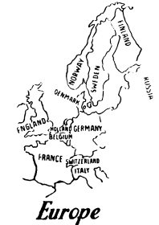

Mr. and Mrs. Smith and their three children live in England. They live in a house. Has their house a window? Yes, their house has many windows. How many windows has their house? It has eight windows. Has their house a door? Yes, it has two doors. It has also a roof. The roof is the top of the house. What is the top of the house? The top of the house is the roof. The house has four walls. Has the house a fifth wall? No, it has only four walls. The windows and the doors are in the walls.
Where is London? London is in England. Where is Paris? Paris is in France. Where is Stockholm? Stockholm is in Sweden. Where is Berlin? Berlin is in Germany. Where is Copenhagen? Copenhagen is in Denmark. Where is Oslo? Oslo is in Norway. Where is Moscow? Moscow is in Russia. Where is Helsinki (Helsingfors)? Helsinki is in Finland. England is a country. Russia is a country. England and Russia are two countries.
Mr. and Mrs. Smith and their children live in London. London is a city. Copenhagen is also a city. London and Copenhagen are two cities. There are many houses in London. London is a big city. There are also many houses in Copenhagen. Copenhagen is also a big city, but Copenhagen is not so big a city as London. Helen is a big girl, but she is not so big as John. Is Baby as big as Helen? No, Baby is not so big as Helen; she is only a small girl. Is John as big as his father? No, John is not so big as his father. Is Helen as big as her mother? No, Helen is not so big as her mother. John is bigger than Helen, and Mrs. Smith is bigger than John. Which is the biggest of the three children? John is the biggest. Which is the biggest of the cities in Europe? London is the biggest city in Europe. England is a country in Europe. London is the biggest city in England. Sweden is a country in Europe. Stockholm is the biggest city in Sweden.
Mr. Smith is English. He lives in England. Mrs. Smith is English. She lives in England. Their children are English. They live in England. The English live in England. The Danes live in Denmark. The Finlanders live in Finland. The Russians live in Russia. The Swedes live in Sweden. The Norwegians live in Norway. The Germans live in Germany. The French live in France.
England is bigger than Denmark, but it is not so big as France. Norway is bigger than Denmark, but it is not so big as Sweden. The house of Mr. and Mrs. Smith is not a big house; it is a small house. Baby is not a big girl; she is a small girl. Helen is smaller than John, and John is smaller than his father. Helen is smaller than her mother. There are many houses in a big city. There are many cities in a big country. Denmark is not a big country; it is only a small country. There are not many big cities in Denmark.
Mr. Smith is a man; his father is also a man. Mr. Smith and his father are two men. Mrs. Smith is a woman; her sister is also a woman. Mrs. Smith and her sister and two women. Boys and girls are children. Men, women, and children are people (persons). There are many people in England. How many people are there in England? There are forty-five (45) million people in England. How many people are there in Finland? There are more than three million people in Finland. There are more people in England than in Denmark. There are not so many people in Denmark as in Sweden. There are six million people in Sweden. There are more Swedes than Danes.
What people live in England? The English live in England. What people live in France? The French live in France. What people live in Russia? The Russians live in Russia.
Mr. and Mrs. Smith have a son. Have they more than one child? Yes, they have three children. They have two girls, but only one boy. They have more girls than boys. Has John more than two sisters? No, he has only two sisters. Are there more than four persons in the family? Yes, there are five persons in the family. What more persons are there in the family than the father and the mother? There are the three children.